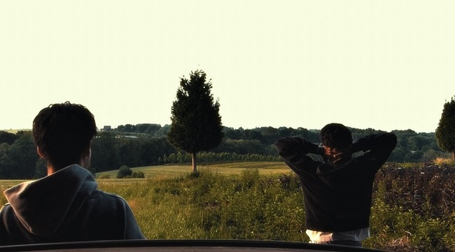

ABOUT 3MI
Ich bin Musikproduzent und Audio Engineer mit Leidenschaft für hochwertigen Sound und individuelle Produktionen. Mein Fokus liegt darauf, kreative Ideen professionell umzusetzen – von der ersten Aufnahme bis zum fertigen Release. Ich biete professionelle Recordings für Vocals, Instrumente und komplette Produktionen sowie präzises Mixing für einen modernen, ausgewogenen Studiosound. Durch sorgfältiges Mastering erhalten Songs den letzten Feinschliff und sind optimal für Streaming-Plattformen und Releases vorbereitet. Darüber hinaus komponiere ich individuelle Musik mit eigener Atmosphäre und entwickle passendes Sounddesign sowie Vertonungen für verschiedenste Medienprojekte. Mein Anspruch ist es, jede Produktion klanglich auf höchstem Niveau umzusetzen und den Charakter jedes Projekts authentisch hervorzuheben.

OUR PROCESS